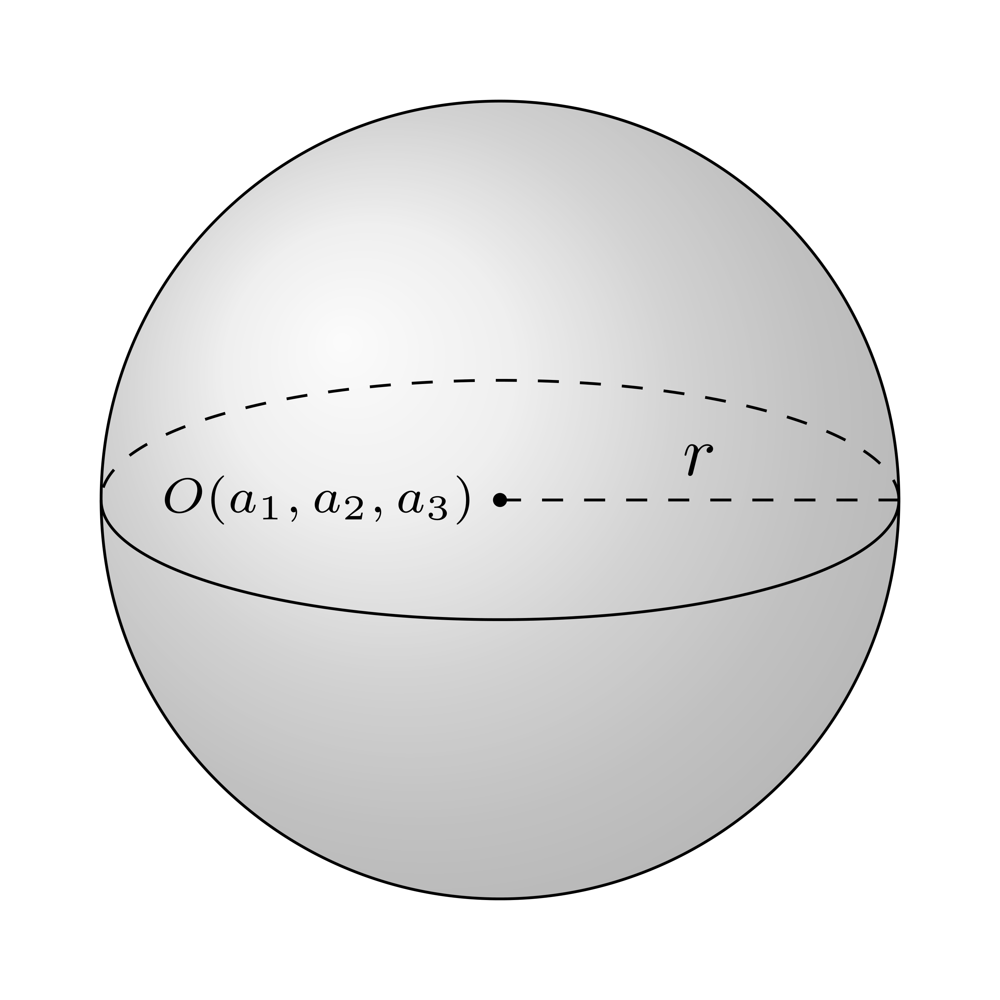
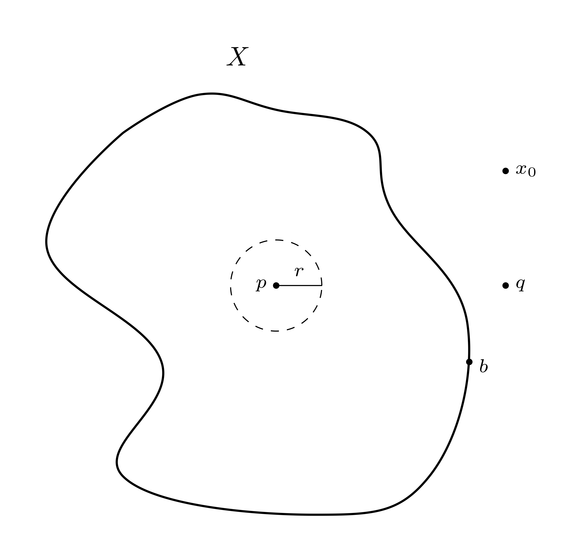

點集拓樸
在數學分析中，我們利用點集拓樸的觀念，討論靠近(closeness)、極限(limit)、連續(continuous)等概念。
令 \(X \neq \varnothing\)，\(X\) 的冪集(power set) 記成 \(P(X)\) 或 \(2^{X}\)，即將所有 \(X\) 的子集納入的集合。我們以 \(|X| = n\) 代表 \(X\) 的子集個數，則 \(|P(X)| = 2^{n}\)。直觀上來說，我們可以將冪集想像為一個函數，將集合 \(X\) 映射到 \(\{0, 1\}\) 上，其中 \(0\) 代表不取，\(1\) 代表取，因此會有 \(2^{n}\) 個。
拓樸空間(Topological Space)
\(\textbf{Definition 2.1}\;\) Let \(X\) be a nonempty set and \(\mathcal{T} \subseteq P(X)\). We sat that \(\mathcal{T}\) is a topology on \(X\) if it satisfies:
\(\varnothing, X \in \mathcal{T}\);
\(\mathcal{T}\) is closed under arbitrary union; i.e., \(U_{\alpha} \in \mathcal{T}, \alpha \in I\), then \(\bigcup_{\alpha}S_{\alpha} \in \mathcal{T}\);
\(\mathcal{T}\) is closed under finite intersection. i.e., \(U_{1}, \cdots, U_{n} \in \mathcal{T}\), then \(\bigcap_{i = 1}^{n} U_{i} \in \mathcal{T}\).
在上述條件下，我們稱 \((X, \mathcal{T})\) 或 \(X\) 為一個拓樸空間，且 \(\mathcal{T}\) 中的每個子集稱為 \(X\) 中的開集(open set)。回到上面的定義，由於 \(\mathcal{T}\) 中的子集都是開的(open)，因此給定一些開集下，其聯集仍為開的；給定有限的開集下，其交集仍為開的，下面我們會去證明這件事。
若 \(X\) 是一個非空集合，則其有以下性質：
\(P(X)\) 是 \(X\) 上最大的拓樸空間，此時 \(X\) 稱之為離散拓樸空間(discrete topological space)
\(\mathcal{T} = \{\varnothing, X\}\) 是 \(X\) 上最大的拓樸空間，此時 \(X\) 稱之為非離散拓樸空間(indiscrete topological space)
而給定一個集合，我們可以定義其有限拓樸空間，例如 \(\{a\}\)，其有限拓撲空間為 \(\{\varnothing, \{a\}\}\)；\(\{a, b\}\) 則有 \(4\) 個。
以下我們討論是基於拓樸空間 \(X\)。
\(\textbf{Definition 2.2}\;\) Let \(p \in X\). A neighborhood of \(p\) is an open set \(U\) containing \(p\).
\(\textbf{Definition 2.3}\;\) \(X\) us a Hausdorff space (or \(T_{2}\) space) if any two distinct points can be separated by open sets, i.e., for all \(p \neq q\) in \(X\), there exist neighborhoods \(U\) of \(p\) and \(V\) of \(q\), such that \(U \cap V = \varnothing\).
在底下的討論中我們會看到賦距空間均是 Hausdorff space。
\(\textbf{Definition 2.4}\;\) A subset \(F \subseteq X\) is said to be closed if \(F^{c} = X \setminus F\) is open in \(X\).
根據 De Morgan’s Law，我們可以得到以下定理：
\(\textbf{Theorem 2.1}\;\) The collection of all closed subsets of \(X\) satisfies:
\(\varnothing, X\) are closed;
arbitrary intersection of closed sets is closed;
finite union of closed sets is closed.
\(\textit{Proof.}\)
\(X \setminus \varnothing = X\) is open, thus \(\varnothing\) is closed. \(X \setminus X = \varnothing\) is closed, thus \(X\) is closed.
Given closed sets \(F_{\alpha}, \alpha \in I\), \[ X \setminus \bigcap_{\alpha \in I} F_{\alpha} = \bigcup_{\alpha \in I} \left(X \setminus F_{\alpha}\right) \] which is open. Therefore, we have \(\bigcap_{\alpha \in I}F_{\alpha}\) is closed.
Given closed sets \(F_{1}, \cdots, F_{n}\), \[ X \setminus \bigcup_{i = 1}^{n} F_{i} = \bigcap_{i = 1}^{n}\left(X \setminus F_{i}\right) \] which is open. Therefore, we have \(\bigcup_{i = 1}^{n}F_{i}\) is closed.
\(\square\)
接著我們討論 \(X\) 中子集的一些拓樸性質。令 \(Y \subseteq X\) 且 \[ \mathcal{T}_{Y} = \left\{U \cap Y|U \text{ is open in }X\right\} \]
\(\textbf{Theorem 2.2}\;\) \(\mathcal{T}_{Y}\) is a topolpgy on \(Y\). In particular, \((Y, \mathcal{T}_{Y})\) is also a topological space.
\(\textit{Proof.}\)
\(\varnothing, Y \in \mathcal{T}_{Y}\)
Given \(U_{\alpha} \in \mathcal{T}_{Y}, \alpha \in I\), where \(U_{\alpha}\) is open in \(X\). Then \[ \bigcup_{\alpha \in I}\left(U_{\alpha} \cap Y\right) = \left(\bigcup_{\alpha \in I}U_{\alpha}\right) \cap Y \] where \(\left(\bigcup_{\alpha \in I}U_{\alpha}\right)\) is open in \(X\). Therefore we have \[ \bigcup_{\alpha \in I}\left(U_{\alpha} \cap Y\right) \in \mathcal{T}_{Y} \]
Given \(U_{1} \cap Y, \cdots, U_{n}\cap Y\), where \(U_{i}\) is open in \(X\). Then \[ \bigcap_{i = 1}^{n}\left(U_{i} \cap Y\right) = \left(\bigcap_{i=1}^{n}U_{i}\right) \cap Y \] where \(\left(\bigcap_{i=1}^{n}U_{i}\right)\) is open in \(X\). Therefore, we have \[ \bigcap_{i = 1}^{n}\left(U_{i} \cap Y\right) \in \mathcal{T}_{Y} \]
Thus, \(\mathcal{T}_{Y}\) is a topological space.
\(\square\)
\(\textbf{Definition 2.5}\;\) In \(\small{\textbf{Theorem 2.2}}\), with the topology \(\mathcal{T}_{Y}\) in \(Y\), \(Y\) is called a topological subspace of \(X\), and \(\mathcal{T}_{Y}\) is called the relative topology of \(Y\) in \(X\). Members in \(\mathcal{T}_{Y}\) are called open sets in \(Y\) on relative open sets in \(Y\).
賦距空間(Metric Space)
賦距空間是拓樸空間的特例，其拓樸性質係由距離(metric)生成的。
\(\textbf{Definition 2.6}\;\) Let \(X\) be a nonempty set. A metric or distance function is a function \[ d: X \times X \longrightarrow \mathbb{R} \] satisfying
\(d(a, b) \geq 0, \forall a, b \in X\), and \(d(a, b) = 0\) if \(a = b\);
\(d(a, b) = d(b, a), \forall a, b \in X\);
\(d(a, b) \leq d(a, c) + d(b, c), \forall a, b, c \in X\)
如果 \(d\) 是 \(X\) 上的距離，則 \((X, d)\) 或簡寫成 \(X\) 稱之為賦距空間，而 \(d(a, b)\) 則是 \(a\) 與 \(b\) 之間的距離。
給定任何集合我們都可以賦予距離，但是該距離是否有用或良好定義則需要再另行討論。
\(\textbf{Example 2.1}:\)
Let \(X\) be a set. Define \[ d: X \times X \longrightarrow \mathbb{R} \] by \[ d(a, b) = \begin{cases} 0,& \; \text{if }a = b\\ 1,& \; \text{if }a \neq b \end{cases} \] Then \(d\) is a metric on \(X\), called the discrete metric, and with this metric, \(X\) is called a discrete metric space. In particular, any set admits a metric.
\(d(a, b) \geq 0, \forall a, b \in X\), and \(d(a, b) = 0\) if \(a = b\).
\(d(a, b) = d(b, a), \forall a, b \in X\).
\(d(a, b) \leq d(a, c) + d(b, c), \forall a, b, c \in X\)
if \(a = b\), trivial
if \(a \neq b\), then the left hand side equals \(1\), while the right hand side is at least greater than \(1\)
\(d\) is a metric on \(X\).
\(\square\)
在數學分析中，最常見也最重要的賦距空間稱為歐氏空間(Euclidean space)，記成 \(\mathbb{R}^{k}\)。在前面我們已經提過歐幾里德範數(Euclidean norm)，其定義為 \[ d(x, y) = \lVert x - y\rVert, x, y \in \mathbb{R}^{k} \] 事實上其就是一個在 \(\mathbb{R}^{k}\) 上的距離：
\(d(x, y) \geq 0, \forall x, y \in \mathbb{R}^{k}\), and \(d(x, y) = 0\) if \(x = y\);
\(d(x, y) = d(y, x), \forall x, y \in \mathbb{R}^{k}\);
\(d(x, y) \leq d(x, z) + d(z, y), \forall x, y, z \in \mathbb{R}^{k}\)
因此，\(\mathbb{R}^{k}\) 即是賦距空間。
在 \(\mathbb{R}^{k}\) 中我們還可以定義不同的距離，而它們均可生成相同的賦距拓樸。例如我們可以在給定 \(\forall 1 \leq p < \infty\) 下，在 \(\mathbb{R}^{k}\) 上定義距離 \(d_{p}\)。
- \(1 \leq p < \infty\) \[ d_{p}(x, y) = \lVert x - y \rVert_{p} = \left(\sum^{k}_{i = 1}\lvert x_{i} - y_{i} \rvert\right)^{1/p} \] 其中 \(x = (x_{1}, \cdots, x_{k}), y = (y_{1}, \cdots, y_{k})\)。
- \(p = \infty\) \[ d_{\infty}(x, y) = \max_{1 \leq i \leq k}\lvert x_{i} - y_{i} \rvert \] 注意到 \(d_{2}\) 即是 Euclidean norm。
令 \((X, d)\) 為一個賦距空間，\(Y \subseteq X\) 且 \(Y \neq \varnothing\)，雖然我們將 \(d\) 限制著，但 \(d\) 在 \(Y \times Y\) 上仍為距離，此時 \(Y\) 稱為 \(X\) 的賦距子空間(metric subspace)。事實上，賦距空間中的子集都是賦距子空間，也就是說，\(\mathbb{R}^{k}\) 的子集都是賦距空間。
賦距空間的各種性質
首先我們先看下圖，下圖為 \(\mathbb{R}^{3}\) 空間中的球(ball)，即給定圓心 \(O(a_{1}, a_{2}, a_{3})\) 與半徑 \(r\)：

則球的內部可以表示如下： \[ \{(x, y, z) \in \mathbb{R}^{3}|(x - a_{1})^{2} + (y - a_{2})^{2} + (z - a_{3})^{2} < r^{2}\} \] 事實上我們可以簡化成 \[ \{(x_{1}, x_{2}, x_{3}) \in \mathbb{R}^{3}|(x - a_{1})^{2} + (y - a_{2})^{2} + (z - a_{3})^{2} < r^{2}\} \] 或 \[ \{x \in \mathbb{R}^{3} \Big| \lVert x- a \rVert < r\} \]
開球(Open Ball)與其性質
我們仿照上面的寫法定義開球：
\(\textbf{Definition 2.7}\;\) Given \(p \in X\) and \(r > 0\), we say that \[ B(p, r) = \{x \in X | d(x, p) < r\} \] is an open ball with center \(p\) and radius \(r\). With the definition of open ball, we define a closed ball with folliwing form: \[ \bar{B}(p, r) = \{x \in X | d(x, p) \leq r\} \]
以下我們針對上述提及的賦距空間討論在其中的「球」。
- 離散賦距空間 \[ B(p, r)= \begin{cases} \{p\},&\; \text{if }0< r \leq 1\\ X,&\; \text{if }r > 1 \end{cases} \] 其 open ball 即是單點 \(p\) 所形成的集合，否則就是整個空間 \(X\)。因此， \[ \bar{B}(p, r)= \begin{cases} \{p\},&\; \text{if }0< r < 1\\ X,&\; \text{if }r \geq 1 \end{cases} \]
- 歐氏空間 \[ B(p, r)= \{x \in \mathbb{R}^{k} \Big\vert \lVert x - p\rVert < r\} \] 此即真正的 open ball。因此 \[ \bar{B}(p, r)= \{x \in \mathbb{R}^{k} \Big\vert \lVert x - p\rVert \leq r\} \] 在 \(k = 1\) 下， \[ B(p, r) = (p-r, p+r) \] 此即一個對稱的開區間(open interval)，而 \[ \bar{B}(p, r) = [p-r, p+r] \] 為一個對稱的閉區間(closed interval)。
\(\textbf{Prop 2.1}\;\) Let \(S\) be a metric subspace of a metric space \(X\). For all \(p \in X\) and \(r > 0\), then we have \[ B_{S}(p, r) = B(p, r) \cap S \] \(\textit{Proof.}\)
By definition, \[ B_{S}(p, r) = \{x \in S\Big| d(x, p)<r\} = \{x \in X\Big| d(x, p) < r\} \cap S = B(p, r) \cap S \]
\(\square\)
開集(Open Set)
假設 \(X\) 為一個賦距空間，其中距離為 \(d\)，我們可以繪製一個集合，並定義上面的點。

\(p\)：內點(interior point)
\(b\)：邊界點(boundary point)
\(q\)：外點(exterior point)
\(x_{0}\)：孤立點(isolated point)
首先我們先定義內點：
\(\textbf{Definition 2.8}\;\) Let \(S \subseteq X\) be a set, and \(p \in S\). We say that \(p\) is an interior point of \(S\) if there exists \(r > 0\), such that \(B(p, r) \subseteq S\). Denoted \(S^{\circ}\) or \(\operatorname{int}(S)\) be the set of all interior points of \(S\), where \(S^{\circ} \subseteq S\).
接著，根據內點的定義，我們就可以良好的定義 open set。
\(\textbf{Definition 2.9}\;\) Let \(S \subseteq X\). We say that \(S\) is open if all points of \(S\) are interior points of \(S\).
因此，每個 open set 都是 open ball 的聯集，即對於所有 \(x \in S\)，存在 \(r_{x} > 0\)，使得 \(B(x, r_{x}) \subseteq S\)，故 \[ S = \bigcup_{x \in S}B(x, r_{x}) \]
\(\textbf{Prop 2.2}\;\)
If \(S \subseteq T\), then \(S^{\circ} \subseteq T^{\circ}\)
Every open ball \(B(p, r) \in X\) is open.
\(S^{\circ}\) is always open, \(\forall S \in X\).
\(\textit{Proof.}\)
Since \(p \in S^{\circ}\), then there exists \(r > 0\), such that \(B(p, r) \subseteq S \subseteq T\). Then we have \(S^{\circ} \subseteq T^{\circ}\).
Given \(q \in B(p, r)\). Let \(\delta = r - d(p, q)\). Our claim is \[ B(q, \delta) \subseteq B(p, r) \] which says \(q\) is an interior point of \(B(p, r)\). Since \(q \in B(p, r)\) is arbitrary, so \(B(p, r)\) is open. Given \(x \in B(q, \delta)\), then \[ \begin{aligned} d(x, p) &\leq d(x, q) + d(q, p)\\ &< \delta + d(q, p)\\ &= (r - d(p, q)) + d(q, p) = r \end{aligned} \] we obtain \(x \in B(p, r)\). Therefore \(B(q, \delta) \subseteq B(p, r)\).
Given an arbitrary \(p \in S^{\circ}\), there exists \(r > 0\), such that \(B(p, r) \subseteq S\). Since \[ B(p, r)^{\circ} \subseteq S^{\circ} \] we have \[ B(p, r) \subseteq S^{\circ} \] Therefore, \(p\) is an interior point of \(S^{\circ}\).
\(\square\)
現在我們討論任何賦距空間都是拓樸空間。
\(\textbf{Prop 2.3}\;\) Let \(\mathcal{T}\) be defined as \[ \mathcal{T} = \{U \subseteq X \Big|\;U \text{ is open in } X\} \] Then \(\mathcal{T}\) is a topology on \(X\). In particular, \(X\) is a topological space.
We prove it by applying the definitions of topological space.
\(\varnothing, X \in \mathcal{T}\), and they are all open. Since \(\varnothing^{\circ} = \varnothing\), and \(X^{\circ} = X\).
Consider \(U_{\alpha} \mathcal{T}, \alpha \in I\), are open, then \(\bigcup_{\alpha \in I}U_{\alpha}\) is open. Given an arbitrary point \(p \in \bigcup_{\alpha \in I}U_{\alpha}\), then there exists \(\alpha_{0} \in I\), such that \(p \in U_{\alpha_{0}}\). Since \(U_{\alpha_{0}}\) is open, there exists \(r > 0\), such that $ \[ B(p, r) \subseteq U_{\alpha_{0}} \subseteq \bigcup_{\alpha \in I}U_{\alpha} \] Therefore, \(\bigcup_{\alpha \in I}U_{\alpha}\) is open.
Consider \(U_{1}, \cdots, U_{n} \in \mathcal{T}\), then \(U_{1} \cap \cdots, U_{n} \in \mathcal{T}\). Given \(p \in U_{i}, 1 \leq i \leq n\), since each \(U_{i}\) is open, there exists \(r_{o} > 0\), such that \(B(p, r_{i}) \subseteq U_{i}, 1 \leq i \leq n\). Let \(r = \min(r_{1}, \cdots, r_{n})\), then \(B(p, r) \subseteq U_{i}, 1 \leq i \leq n\), then \[ B(p, r) \subseteq \bigcap_{i = 1}^{n}U_{i} \] which yields that \(p\) is an interior point of \(\bigcap_{i = 1}^{n}U_{i}\), so \(\bigcap_{i = 1}^{n}U_{i}\) is open.
\(\square\)
\(\textbf{Definition 2.10}\;\) Let \(X\) be a metric space with metric \(d\). The topoplogy \(\mathcal{T}\) is called the metric topology induced by \(d\).
因此，所有的賦距空間都是拓樸空間。
上面提到，所有 \(X\) 上的open set 都是 open ball 的聯集，因此所有 open ball 的集合形成了拓樸空間 \(X\) 的基底(base)。
\(\textbf{Example 2.2}:\) Let \(X\) be a set with discrete metric \(d\), i.e., \(X\) is a discrete metric space. What are the open balls and open sets in \(X\)?
\(\textit{Proof.}\)
We know that for all \(p \in X\), \[ B(p, r) = \begin{cases} \{p\}, &\; \text{if }0 < r \leq 1\\ X, &\; \text{if }r > 1 \end{cases} \] Given \(S \subseteq X\), \(S^{\circ} = S\), for all \(p \in S\).
Therefore, we can conclude that all subsets of \(X\) are open, i.e., the metric topology on \(X\) is just the discrete topology on \(X\), i.e., \(\mathcal{T} = P(X)\).
\(\square\)
我們令 \(X\) 是一個賦距空間，且 \(Y \subseteq X\)，則 \(Y\) 為 \(X\) 的賦距子空間，故 \[ B_{Y}(y, r) = B(y, r) \cap Y, \forall y \in Y, r > 0 \]
\(\textbf{Prop 2.4}\;\) A subset \(A \subseteq Y\) is open in \(Y\) if and only if \(A = U \cap Y\) for some open sets \(U \in X\). In particular, the metric topology on \(Y\) is just the relative topology of \(Y\) in \(X\).
\(\textit{Proof.}\)
Suppose \(A \subseteq Y\) is open in \(Y\). Then \[ \begin{aligned} A &= \bigcup_{y \in A}B_{Y}(y, r_{y})\\ &= \bigcup_{y \in A}\left(B(y, r_{y}) \cap Y\right)\\ &= \left(\bigcup_{y \in A}B(y, r_{y})\right) \cap Y\\ \end{aligned} \]
Let \(U = \bigcup_{y \in A}B(y, r_{y})\), then \(U\) is open in \(X\) and \(A = U \cap Y\).
Suppose \(A = U \cap Y\), where \(U \subseteq X\) is open. For all \(y \in A\), \(y \in U \cap Y\), then \(y \in U\). Thus, there exists \(r > 0\), such that \(B(y, r) \subseteq U\), then we have \[ B(y, r) \cap Y \subseteq U \cap Y = A \Rightarrow B_{Y}(y, r) \subseteq A \] So \(A\) is open in \(Y\).
\(\square\)
Reuse
Citation
@online{sung2023,
author = {Sung, Anthony},
title = {點集拓樸},
date = {2023-08-07},
url = {https://yueswater.netlify.app/posts/2023-08-07-real-analysis-basic-topolgy/},
langid = {en}
}